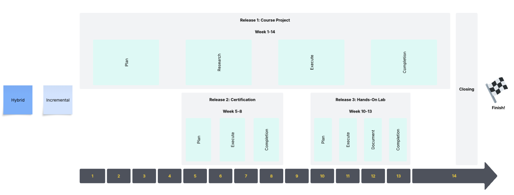
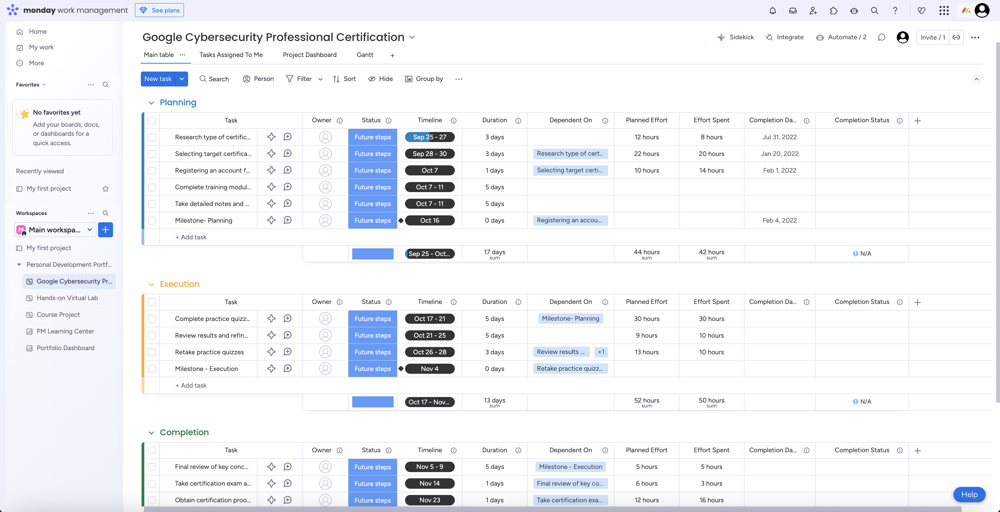
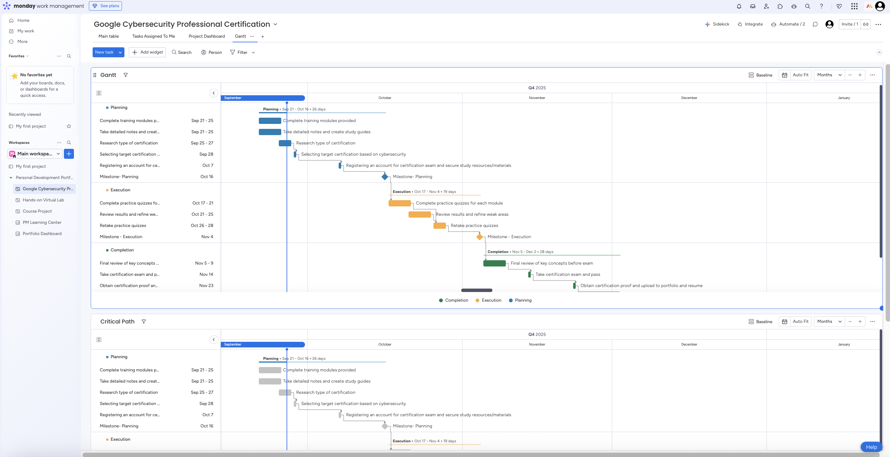
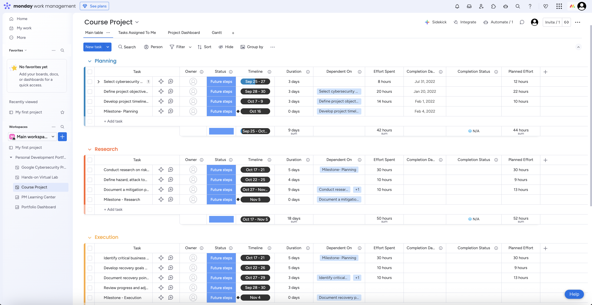

Secure an entry‑level job in cybersecurity/IT by building and showcasing a professional cybersecurity portfolio that highlights certifications, hands-on labs, LinkedIn Learning courses, and capstone course projects, demonstrating practical skills and workplace readiness.
Professional Cybersecurity Portfolio
Project Charter - Managing IT Projects Course
📑 Table of Contents
- 📋 1. Project Goal & Description
- 🎯 2. Vision, Mission & Strategy Alignment
- 💼 3. Business Case & Justification
- 📏 4. High-Level Scope
- 👥 5. Stakeholder Register
- 📦 6. Deliverables
- 🧩 7. Work Breakdown Structure (WBS)
- 💵 8. Budget & Cost Estimate
- 🧭 9. Project Methodology
- 📊 10. Multiple Release Schedule
- 🛠 11. Tool Selection & Setup
- 📷 12. Project Tool Screenshot
Student Information
Student Name:
Elaine Li
Course:
Managing IT Projects
Semester:
Fall 2025
📋 1. Project Goal & Description
▼🎯 2. Vision, Mission & Strategy Alignment
▼Personal Mission Connection:
My mission is to help organizations strengthen their networks, systems, and data by identifying vulnerabilities, implementing security measures, and responding to incidents. My goal is to protect sensitive data from data breaches and cyber threats while also ensuring integrity.
Vision Alignment:
In the next 3-5 years, I envision myself working in the cybersecurity field with an organization that prioritizes data protection and risk management. Through continuous learning and hands-on experiences, I hope to have the opportunity to contribute to protecting personal and business information by developing incident response plans and implementing security measures for an organization.
Strategic Goal Support:
This project advances my strategic goals of developing advanced cybersecurity skills, hands-on experience, and building a professional portfolio. By completing certifications, labs, and projects, I am not just improving my technical skills but also achievements that strengthen my career readiness for the IT/cybersecurity field. This supports my vision of becoming a cybersecurity professional who safeguards sensitive information and maintaining the integrity of digital assets.
💼 3. Business Case & Justification
▼Professional Value:
This project will benefit my career by allowing me to gain certifications, hands-on experience, and build a professional portfolio that demonstrates my cybersecurity skills to employers. These will help strengthen my resume and increase my opportunity for entry-level IT and cybersecurity positions.
Personal Value:
This project will allow me to strengthen my problem-solving and critical thinking skills while applying my knowledge to real-world scenarios. Completing certifications, labs, and projects will give me a sense of accomplishment and confidence in my ability to contribute to cybersecurity solutions.
Learning Outcomes:
From this project, I will gain technical skills in identifying vulnerabilities, implementing security measures, and responding to incidents through my coursework. I will develop project management skills by setting timelines, breaking down sub-projects, and delivering goal-driven outcomes. I will deepen my knowledge of cybersecurity frameworks, tools, and best practices. These will help me be prepared for a cybersecurity career.
📏 4. High-Level Scope
▼✅ In Scope for Semester Project
- Complete at least one entry-level cybersecurity certification (e.g., Google Cybersecurity Professional Certificate, ISC2 CC, CompTIA Security+, etc.)
- Complete hands-on virtual labs related to cybersecurity/IT field demonstrating technical skills (e.g., TryHackMe, etc.)
- Complete selected LinkedIn Learning courses in cybersecurity/IT.
- Complete Capstone Cybersecurity course project.
🗺️ Roadmap Items (≤6 Months)
- Pursue additional cybersecurity certifications
- Build one additional visualization project in a different tool to expand skills.
- Expand my portfolio with certifications and achievements.
- Complete additional hands-on virtual labs/stimulations
- Update portfolio and add certifications on LinkedIn
❌ Out of Scope
- Completion of international certifications requiring more than a year of preparation (e.g., CISSP, CISM)
- Development of a full-scale enterprise security tool or application (requires extensive resources)
- Creation of custom cybersecurity hardware (e.g., IoT penetration device)
- Graduate-level research publications related to cybersecurity
👥 5. Stakeholder Register
▼| Stakeholder | Category | Role/Interest | Power | Interest | Quadrant | Engagement Strategy |
|---|---|---|---|---|---|---|
| Profesors | Internal | Course evaluator, sets project expectations | High | High | Manage Closely | Provide regular updates on progress and deliverables; seek feedback to align with course expectations. |
| Class Peers | Internal | Provide peer feedback and collaboration in discussions | Low | Medium | Keep Informed | Share project progress in class discussions; seek peer feedback for improvements. |
| Academic Advisor | Internal | Provides guidance on aligning coursework with academic career | Medium | High | Keep Informed | Inform about progress on certifications, labs, and project; seek advice to align with long-term academic goals. |
| Future Employers | External | End-users as hiring criteria | High | High | Manage Closely | Build professional networks through communication and continuous updates tailored to employer expectations. |
| Google (Certification Provider) | External | Provides certification framework and exam | High | Low | Keep Satisfied | Meet certification requirements and complete exam; no ongoing engagement needed. |
| University Career Services | Internal | Supports career readiness and job placement | Medium | High | Manage Closely | Share certification and portfolio updates/progress for internship and job opportunities. |
| Personal Support System | External | Provides moral support | Low | Medium | Monitor | Provide minimal information about any updates. |
| External | Networking platform for showcasing certifications, progress, and achievements | Medium | Medium | Keep Informed | Share portfolio and certifications for networking. |
Power-Interest Grid Visualization

📦 6. Deliverables
▼| Deliverable | Type | SMART Description | Definition of Done |
|---|---|---|---|
| Google Cybersecurity Professional Certificate | Tangible | Earn an entry-level certification by the end of the semester | Certification of completion or proof of certification completion received. |
| Hands-On Virtual Lab | Tangible | Complete a guided hands-on virtual lab by the end of the semester | Lab completed with results/proof documented |
| LinkedIn Learning Courses | Tangible | Complete LinkedIn Learning courses related to cybersecurity by the end of the semester | Courses completed with certificates of completion that can be added to LinkedIn and my portfolio |
| Capstone Cybersecurity Course Project | Tangible | Complete a cybersecurity related course project by the end of the semester | Project is completed, documented, and showcased in your portfolio |
🧩 7. Work Breakdown Structure (WBS)
▼Google Data Analytics Professional Certificate
Complete WBS breakdown available - includes all courses 1-8 with detailed task structures, durations, and dependencies.
Deliverable 2 – Applied Analytics Project Report (Case Study)
Includes Project Setup, Analysis & Development, Report Writing, and Integration work packages.
Deliverable 3 – Visual Dashboard
Includes Dashboard Planning, Data Preparation, Development, and Integration work packages.
Deliverable 4 – Portfolio Integration
Includes Setup, Content Integration, and Finalization work packages.
💵 8. Budget & Cost Estimate
▼| Cost Item | Quantity/Hours | Rate/Price | Total Cost |
|---|---|---|---|
| 👨💻 LABOR COSTS | |||
| Data Analyst / Student Researcher | 730 | $25/hr | $18,250 |
| Dashboard Designer | 120 | $30/hr | $3,600 |
| Project Manager | 74 | $60/hr | $4,440 |
| LABOR SUBTOTAL | $26,290 | ||
| 💻 EQUIPMENT / SOFTWARE COSTS | |||
| Coursera (Google DA Certificate, 4 months) | 4 months | $39/month | $156 |
| Tableau Public, Excel (Student), Looker Studio | N/A | Free | $0 |
| EQUIPMENT/SOFTWARE SUBTOTAL | $156 | ||
| 📦 MATERIALS COSTS | |||
| Training materials & documentation assets | 1 | $225 | $225 |
| MATERIALS SUBTOTAL | $225 | ||
| 🛠 SERVICES COSTS | |||
| Cloud hosting / APIs / consulting | N/A | Free | $0 |
| SERVICES SUBTOTAL | $0 | ||
| SUBTOTAL DIRECT COSTS | $26,671 | ||
| Contingency Reserve | 20% | Applied to direct subtotal | $5,334 |
| 💰 TOTAL PROJECT BUDGET | $32,005 | ||
🧭 9. Project Methodology (Hybrid: Incremental + Iterative)
▼Requirements: Deliverables are well-defined (certificate, case study, dashboard, portfolio), but dataset choice, dashboard design, and integration still require iteration and feedback.
Delivery Cadence: To reduce risk, the project is divided into three major releases instead of one final delivery.
- Release 1 (Week 5): Certification progress + case study outline
- Release 2 (Week 10): Refined case study + dashboard prototype
- Release 3 (Week 14): Completed certificate + final dashboard + published portfolio
Approach:
- Predictive: Applied to certification since modules are fixed and structured.
- Iterative: Used for case study and dashboard to refine through feedback cycles.
- Incremental: Portfolio built up progressively, finalized at semester end.
Why Hybrid? This approach balances predictability with adaptability—ideal for a semester project that combines fixed requirements with evolving creative elements.
📊 10. Hybrid: Incremental Release Schedule
▼Feedback
Release 1
Weeks 5–8
- Plan Cybersecurity Certificate
- Train & Practice Materials
- Complete Exam
→
Feedback
Release 2
Weeks 1-14
- Plan & Research Course Project
- Execute Project
- Progress Report & Submit Project
→
Feedback
Release 3
Weeks 10–13
- Prepare Lab Materials/Software
- Execute & Perform Lab Stimulation
- Document & Submit Lab Report
🛠 11. Tool Selection & Setup
▼Tools Explored
- Microsoft Project → Strong for predictive and hybrid; detailed scheduling/reporting, but heavy and paid-only.
- Trello → Simple, card-based Kanban; flexible for adaptive/hybrid but lacks advanced dependencies/reporting.
- Jira → Agile-oriented with Scrum/Kanban boards, backlog management, and sprint planning; supports Hybrid with customizable workflows.
Final Choice: Jira
Jira supports Hybrid methodology by enabling structured releases and milestones while using iterative sprint cycles for tasks like case study drafting and dashboard refinements.
- More flexible than Microsoft Project
- Stronger than Trello in backlog management, reporting, and sprint tools
- Free plan sufficient for semester project
Key Features Supporting My Project
- Scrum/Kanban boards → Organize work into iterations and track progress visually.
- Backlog management → Prioritize tasks and schedule them into sprints/releases.
- Sprint planning & reporting → Align with Hybrid iterative feedback cycles.
- Customizable workflows → Map deliverables (certification, case study, dashboard, portfolio) into phases with feedback loops.
Project Structure (Hybrid)
Releases (Incremental):
- R1 (Weeks 5–7): Courses 1–2, dataset selection, case study outline
- R2 (Weeks 8–10): Courses 3–5, case study draft, dashboard prototype
- R3 (Weeks 11–14): Courses 6–8, dashboard refinement, portfolio integration, final submission
Iterations (Iterative): Each release ends with a feedback loop (instructor/peer review). Backlog items refined across sprints.
Dependencies
- Dataset selection → must be completed before drafting case study.
- Dashboard prototype → must be built before refining metrics and visuals.
- Certification courses → sequential (Courses 1–8).
- Portfolio integration → final step after case study + dashboard are finished.
Example Backlog (15+ tasks)
- Select dataset for case study
- Draft project charter
- Complete DA Certificate Courses 1–8
- Draft case study outline & full draft
- Instructor feedback on draft
- Build dashboard prototype in Tableau/Looker Studio
- Peer feedback on dashboard
- Refine dashboard metrics/visuals
- Publish portfolio site
- Link certification badge
- Submit final project
📷 12. Project Tool Screenshot
▼This screenshot shows my Jira setup with Epics (Certification, Case Study, Dashboard, Portfolio), the Phase 1 sprint, and the project backlog organized into tasks.

